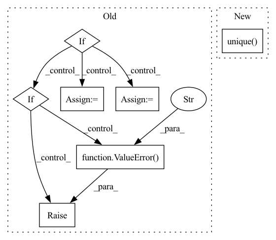

Pattern ID :26422
Before Change
validation data
if isinstance(df, pd.DataFrame):
df_is_dict = False
df_dict = {"__df__": df}
elif raise ValueError("Please insert valid df type (i.e. pd.DataFrame, dict)" )
if len(df_dict) == 1:
for df_name, df_i in df_dict.items():
folds = _crossvalidation_split_df(df_i, n_lags, n_forecasts, k, fold_pct, fold_overlap_pct)
else:After Change
validation data
df, _, _, _ = prep_or_copy_df(df)
if len(df["ID"].unique() ) == 1:
for df_name, df_i in df.groupby("ID"):
folds = _crossvalidation_split_df(df_i, n_lags, n_forecasts, k, fold_pct, fold_overlap_pct)
else:In pattern: SUPERPATTERN
Frequency: 3
Non-data size: 7
Instances Fragment ID: 79261400
Project Name: ourownstory/neural_prophet
Commit Name: 7fcf23557cb5b30885a8a07387d411c61a50a05e
Time: 2022-06-21
Author: mgheorghecr@gmail.com
File Name: neuralprophet/df_utils.py
M Class Name: AnonimousClass
N Class Name: AnonimousClass
M Method Name: crossvalidation_split_df(7)
N Method Name: crossvalidation_split_df(7)
M Parent Class:
N Parent Class:
M File Name: neuralprophet/df_utils.py
N File Name: neuralprophet/df_utils.py
M Start Line: 709
M End Line: 717
N Start Line: 701
N End Line: 722
Before Change
pd.DataFrame, dict
validation data
if isinstance(df, pd.DataFrame):
df_is_dict = False
df_dict = {"__df__": df}
elif raise ValueError("Please insert valid df type (i.e. pd.DataFrame, dict)" )
df_train = {}
df_val = {}
if local_split:
for key in df_dict:After Change
df_train = pd.concat((df_train, df_t.copy(deep=True)), ignore_index=True)
df_val = pd.concat((df_val, df_v.copy(deep=True)), ignore_index=True)
else:
if len(df["ID"].unique() ) == 1:
for df_name, df_i in df.groupby("ID"):
df_train, df_val = _split_df(df_i, n_lags, n_forecasts, valid_p, inputs_overbleed)
else: Fragment ID: 79261373
Project Name: ourownstory/neural_prophet
Commit Name: 7fcf23557cb5b30885a8a07387d411c61a50a05e
Time: 2022-06-21
Author: mgheorghecr@gmail.com
File Name: neuralprophet/df_utils.py
M Class Name: AnonimousClass
N Class Name: AnonimousClass
M Method Name: split_df(6)
N Method Name: split_df(6)
M Parent Class:
N Parent Class:
M File Name: neuralprophet/df_utils.py
N File Name: neuralprophet/df_utils.py
M Start Line: 924
M End Line: 949
N Start Line: 913
N End Line: 930
Before Change
received_ID_col = False
received_single_time_series = True
if isinstance(df, pd.DataFrame):
new_df = df.copy(deep=True)
if "ID" in df.columns:
received_ID_col = True
log.debug("Received df with ID col")
if len(new_df["ID"].unique()) > 1:
log.debug("Received df with many time series")
received_single_time_series = False
else:
log.debug("Received df with single time series")
else:
new_df["ID"] = "__df__"
log.debug("Received df with single time series")
elif raise ValueError("Please, insert valid df type (pd.DataFrame)" )
// list of IDs
id_list = list(new_df.ID.unique())
After Change
return df_copy, df_has_id_column, True, ["__df__"]
// Create a list of unique ID values
unique_id_values: list[str] = df_copy["ID"].unique() .tolist()
// Check if there is only one unique ID value
df_has_single_time_series = len(unique_id_values) == 1
Fragment ID: 79261407
Project Name: ourownstory/neural_prophet
Commit Name: ddcb2d23c702ca2583d530c67b4ba2fe673cedd0
Time: 2023-03-01
Author: noxan@users.noreply.github.com
File Name: neuralprophet/df_utils.py
M Class Name: AnonimousClass
N Class Name: AnonimousClass
M Method Name: prep_or_copy_df(1)
N Method Name: prep_or_copy_df(1)
M Parent Class:
N Parent Class:
M File Name: neuralprophet/df_utils.py
N File Name: neuralprophet/df_utils.py
M Start Line: 25
M End Line: 63
N Start Line: 25
N End Line: 64